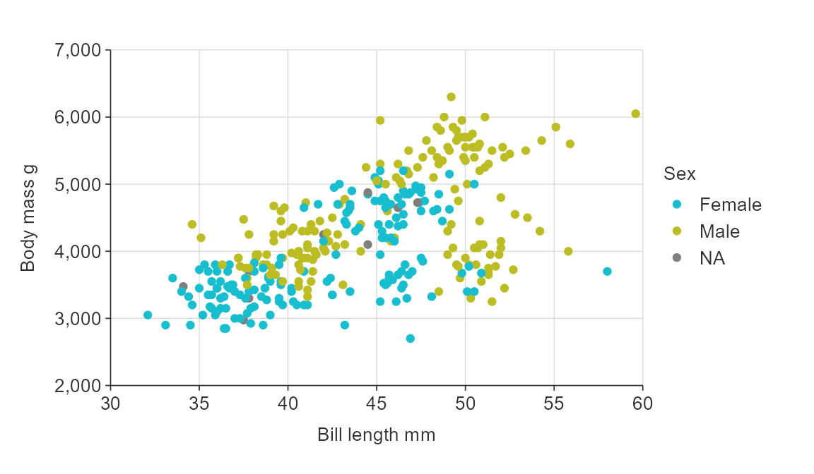
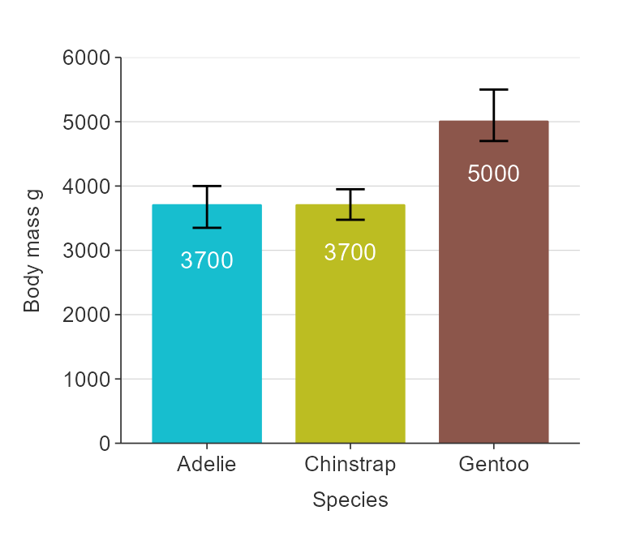
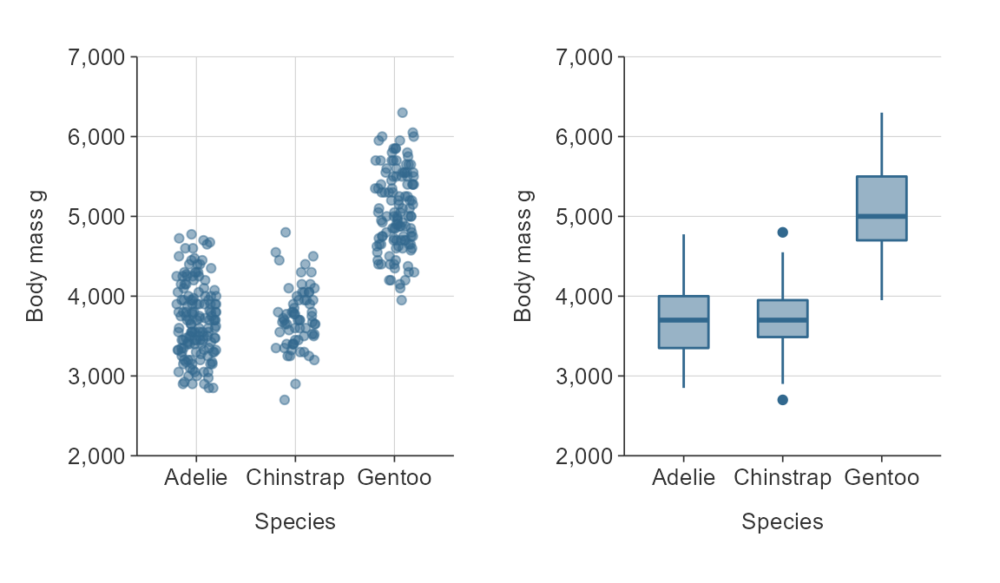

library(dplyr) library(simplevis) library(palmerpenguins) library(ggplot2) library(patchwork) set.seed(123456789)
Purpose
simplevis is a package of ggplot2 and leaflet wrapper functions that aims to make visualisation easier with less brainpower required.
It does this by:
- using families of functions of combinations of colouring (by a variable), facetting, neither or both
- using prefixes to make it easier to adjust aspects of the visualisation
- unifying colouring into one concept, and simplyfing applying different colouring methods.


Colouring, facetting, neither or both
Each visualisation family generally has four functions (except tile, which has two).
The function name specifies whether or not a visualisation is to be coloured by a variable (*_col()), facetted by a variable (*_facet()), or neither (*()) or both of these (*_col_facet()).
Colouring by a variable means that different values of a selected variable are to have different colours. Facetting means that different values of a selected variable are to have their facet.
A *() function such gg_point() requires only a dataset, an x variable and a y variable.
gg_point(penguins, x_var = bill_length_mm, y_var = body_mass_g)

A *_col() function such gg_point_col() requires only a dataset, an x variable, a y variable, and a colour variable.
gg_point_col(penguins, x_var = bill_length_mm, y_var = body_mass_g, col_var = sex)

A *_facet() function such gg_point_facet() requires only a dataset, an x variable, a y variable, and a facet variable.
gg_point_facet(penguins, x_var = bill_length_mm, y_var = body_mass_g, facet_var = species)

A *_col_facet() function such gg_point_col_facet() requires only a dataset, an x variable, a y variable, a colour variable, and a facet variable.
gg_point_col_facet(penguins, x_var = bill_length_mm, y_var = body_mass_g, col_var = sex, facet_var = species)

Data is generally plotted with a stat of identity, which means data is plotted as is.
For boxplot, there is adefault stat of boxplot, which means the y_var will be transformed to boxplot statistics.
For density, the stat of the x_var based on the density prefixed arguments that inform the density calculation.
Generally, an x_var and a y_var is required. However, y_var is not required for density*() functions. Neither x_var or y_var are required for gg_sf*() (or leaf_sf*()) functions.
Titles
Defaults titles are:
- no title, subtitle or caption
- x, y and colour titles are converted to sentence case using the
snakecase::to_sentence_casefunction.
gg_point_col(penguins, x_var = bill_length_mm, y_var = body_mass_g, col_var = species)

You can customise titles with title, subtitle, x_title, y_title and caption arguments.
gg_point_col(penguins, x_var = bill_length_mm, y_var = body_mass_g, col_var = species, title = "Adult penguin mass by bill length and species", subtitle = "Palmer station, Antarctica", x_title = "Bill length (mm)", y_title = "Body mass (g)", col_title = "Penguin species")

You can also request no x_title using x_title = "" or likewise for y_title and col_title.
Colour palettes
Change the colour palette by supplying a vector of hex code colours to the pal argument.
gg_point(iris, x_var = Sepal.Width, y_var = Sepal.Length, pal = "#e7298a")

gg_point_col(penguins, x_var = bill_length_mm, y_var = body_mass_g, col_var = species, pal = c("#da3490", "#9089fa", "#47e26f"))

Refer to the colour article for further information.
Scales
simplevis makes it easy to modify defaults.
Arguments have consistent prefixes based on x_*, y_*, col_* or facet_*, and as such the autocomplete can help identify what you need.
Some examples of transformations available are:
-
*_na_rmto quickly not include NA observations -
*_labelsto adjust labels for any x, y, col or facet scale -
*_zeroto start at zero for numeric x or y scales -
*_breaks_nfor the number of numeric bins of breaks for the x, y or col scale to aim for -
*_revto reverse the order of categorical x, y or col scales in bars -
*_expandto add padding to an x or y scale. -
*_balanceto balance a numeric scale, so that zero is in the centre -
col_legend_noneto turn the legend off.
plot_data <- storms %>% group_by(year, status) %>% summarise(wind = mean(wind)) gg_bar_col(plot_data, x_var = year, y_var = wind, col_var = status, stack = TRUE, x_breaks_n = 4, x_labels = function(x) stringr::str_sub(x, 3, 4), y_labels = scales::label_comma(accuracy = 0.1), col_labels = c("H", "TD", "TS"), y_zero = T, y_breaks_n = 10, y_expand = ggplot2::expansion(mult = c(0.025, 0.025)))

gg_point_col(penguins, x_var = bill_length_mm, y_var = body_mass_g, col_var = sex, col_na_rm = TRUE)

plot_data <- penguins %>% group_by(species) %>% summarise(body_mass_g = mean(body_mass_g, na.rm = TRUE)) gg_bar_col(plot_data, x_var = species, y_var = body_mass_g, col_var = species, col_legend_none = TRUE, size_width = 0.5)

Refer to the scales article for further information.
Themes
You can adjust the theme of any simplevis plot by providing a ggplot2 theme to the theme argument.
gg_point_col(penguins, x_var = bill_length_mm, y_var = body_mass_g, col_var = species, title = "A nice long title", subtitle = "And a subtitle", theme = ggplot2::theme_grey())

Refer to the themes article for further information.
sf and stars maps
simplevis provides sf and stars maps.
sf maps are maps of point, line or polygon features.
stars maps are maps of arrays (i.e. grids).
sf functions work in the same way as the ggplot2 graph functions, but with the following differences:
- Data must be an
sfobject - Data must be of
POINT/MULTIPOINT,LINESTRING/MULTILINESTRING, orPOLYGON/MULTIPOLYGONgeometry type - Data must have a coordinate reference system (CRS) defined
- No
x_varandy_varvariables are required - Borders can added to maps by providing an
sfobject to thebordersargument.
stars functions work in the same way as the ggplot2 graph functions, but with the following differences:
- Data must be a
starsobject - Data must have a coordinate reference system (CRS) defined
- No
x_varandy_varvariables are required - Borders can added to maps by providing an
sfobject to thebordersargument.
The following example objects are provided withing the package for learning purposes: example_point, example_polygon and example_stars.
The borders argument allows for the user to provide an sf object as context to the map (e.g. a coastline or administrative boundaries). An sf object of the New Zealand coastline has been provided to illustrate how this works.
gg_sf_col(example_polygon, col_var = density, col_method = "continuous", borders = example_borders)

gg_sf_col(example_polygon, col_var = density, col_method = "bin", borders = example_borders)

gg_stars_col(example_stars, col_var = nitrate, col_method = "quantile", col_cuts = c(0, 0.05, 0.25, 0.5, 0.75, 0.95, 1), col_na_rm = TRUE, borders = example_borders)

leaflet wrappers
simplevis also provides a leaflet wrapper functions for sf and stars objects. These functions work in a similar way to the gg_sf*() and gg_stars*() functions.
Refer to the leaflet article for further information.
Supported variable classes
Variable types supported by the different families of functions are outlined below.
Where:
- Categorical refers to character, factor, or logical classes.
- Numeric refers to double or integer classes.
- Any* refers that if a numeric, date or datetime variable, values must be bins that are mutually exclusive and equidistant.
Working with the pipe
simplevis functions work with the pipe.
penguins %>% gg_density_col(x_var = body_mass_g, col_var = sex, col_na_rm = TRUE)

Extending simplevis Output objects
All gg_* and leaf_* wrapper functions produce ggplot or leaflet objects.
This means layers can be added to the functions in the same way you would a ggplot2 or leaflet object.
Note you need to add all aesthetics to any additional geom_* layers.
gg_point_col(penguins, x_var = bill_length_mm, y_var = body_mass_g, col_var = species) + ggplot2::scale_y_log10( name = "Bill length mm", breaks = function(x) pretty(x, 4), limits = function(x) c(min(pretty(x, 4)), max(pretty(x, 4))), expand = c(0, 0) )

This means you can facet by more than one variable, provided that you are not stacking your bars.
plot_data <- penguins %>% group_by(species, sex, island) %>% summarise(body_mass_g = mean(body_mass_g, na.rm = TRUE)) gg_bar(plot_data, x_var = sex, y_var = body_mass_g, size_width = 0.5, x_na_rm = TRUE, y_breaks_n = 3) + facet_grid(rows = vars(species), cols = vars(island), labeller = as_labeller(snakecase::to_sentence_case))

The patchwork package is useful to patch visualisations together.
library(patchwork) p1 <- gg_point(penguins, x_var = species, y_var = body_mass_g, x_jitter = 0.2, alpha_point = 0.5) p2 <- gg_boxplot(penguins, x_var = species, y_var = body_mass_g) p1 + p2

All ggplot objects can be converted into interactive html objects using plotly::ggplotly.
plot <- gg_point_col(penguins, x_var = bill_length_mm, y_var = body_mass_g, col_var = species) plotly::ggplotly(plot) %>% plotly_camera()
simplevis also offers more customisability for making tooltips(i.e. hover values) in ggplotly (i.e. hover values).
Refer to the ggplotly article for further information.
Further information
For further information, see the articles on the simplevis website.